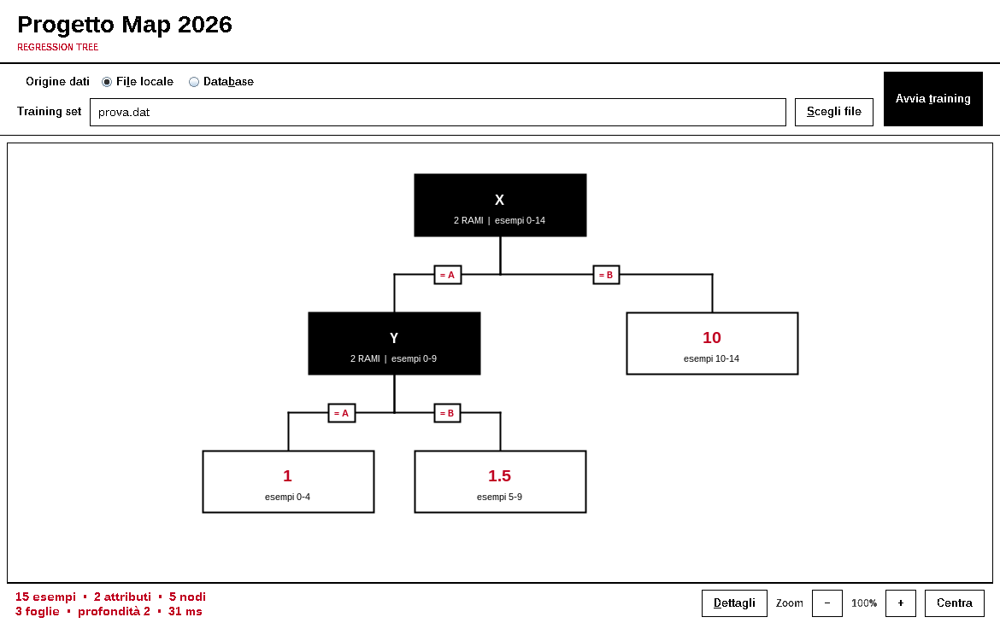
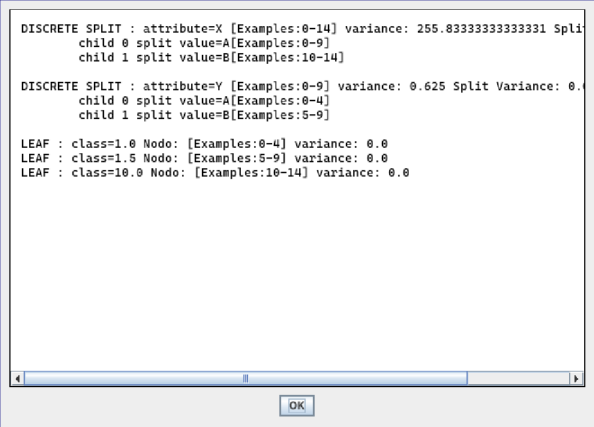
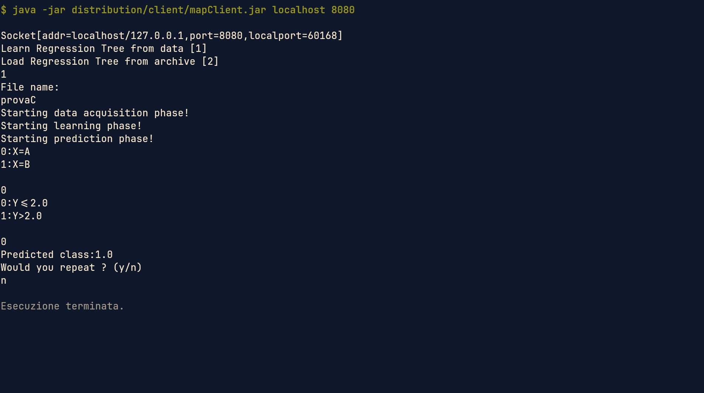

MODALITÀ A
GUI locale Swing
- Input da training set
.dat. - Attributi esplicativi discreti; target continuo.
- Training in memoria e visualizzazione dell’albero.
- Statistiche, zoom, centratura e dettagli testuali.
nessun databasenessuna rete
Progettazione, implementazione e verifica di un sistema Java per apprendere, visualizzare e usare alberi di regressione.
.dat e sistema JAR client/server su database.
Il progetto stima un target numerico tramite un albero di regressione. Il repository espone due modalità autonome: condividono i concetti di dominio, ma non comunicano tra loro.
.dat..dat e non mostrano un’interfaccia grafica.Flusso monoprocesso: parsing, apprendimento e rendering avvengono nella JVM locale.
Comunicazione TCP tramite stream di oggetti; accesso ai dati tramite JDBC.
| Area | Tecnologia | Artefatto principale |
|---|---|---|
| Dominio | Java SE | src/data, src/tree |
| Interfaccia | Swing/AWT, rendering custom | estensioni/*.java |
| Distribuzione | JAR, Socket, Object Streams | distribution/client, distribution/server |
| Persistenza dati | JDBC + Connector/J 8.0.17 | map6_setup.sql |
| Verifica | JUnit 4.12 | tests/ |
Ogni nodo copre una partizione di esempi. L’errore memorizzato come variance è, in realtà, la somma degli errori quadratici (SSE) rispetto alla media del target.
Per ogni attributo candidato si costruiscono le partizioni e si sceglie lo split che minimizza Σ SSE(figlio). Una foglia restituisce la media ŷ della propria partizione.
La soglia è il 10% del training set, con divisione intera. Il nodo diventa foglia quando la partizione non supera la soglia oppure quando non produce più di un ramo valido.
Il codice locale valuta split discreti. Il server distribuito include anche ContinuousNode e scarta feature continue senza valori distinti.
| Package / classe | Responsabilità | Collaborazioni |
|---|---|---|
data.Data | Carica e valida il training set; espone feature e target; ordina partizioni. | Attribute, DiscreteAttribute, ContinuousAttribute |
tree.Node | Definisce intervallo di esempi e SSE comune ai nodi. | SplitNode, LeafNode |
tree.SplitNode | Descrive attributo, rami e costo dello split. | SplitInfo, nodi discreti/continui |
tree.RegressionTree | Coordina selezione dello split, ricorsione, regole e predizione. | Data, gerarchia Node |
estensioni.VisualTree | Adatta il modello ai soli dati richiesti dalla vista. | RegressionTreeCanvas |
server.ServerOneClient | Gestisce il protocollo e lo stato della singola sessione. | Socket, Data, RegressionTree |
Node e SplitNode astraggono foglie e split.Diagrammi UML completi e vettoriali: docs/diagramma-classi.svg e docs/diagramma-classi-client-server.svg.
L’estensione Swing rende leggibile la struttura appresa senza introdurre dipendenze esterne. Il training parte da un file locale e il risultato viene disegnato su un canvas navigabile.

prova.dat: nodi di split neri, condizioni sui rami e predizioni in rosso nelle foglie..dat.Data.RegressionTree.VisualTree e rendering.
@schema 2 @desc X A,B @desc Y A,B @target class @data 4 A,A,1.0 A,B,1.5 B,A,10.0 B,B,10.0
MultiServer accetta connessioni in ciclo. Per ogni socket crea un ServerOneClient, sottoclasse di Thread, che conserva training set, albero e nome archivio della sessione.
Dopo il training il server serializza automaticamente l’albero in un file con il nome della tabella. Un’esecuzione successiva può caricarlo senza interrogare il database.
| Codice | Operazione | Scambio principale |
|---|---|---|
| 0 | Carica dati | nome tabella → OK / messaggio di errore |
| 1 | Apprendi e salva | costruzione albero → OK / errore I/O |
| 2 | Carica archivio | nome file → OK / errore |
| 3 | Predici | QUERY + rami ⇄ indice; infine OK + valore |

provaC, scelta dei rami e predizione finale pari a 1.0.MapDB, utente MapUser, porta 3306.provaC (15 righe) e servo (167 righe).La suite è stata ricompilata ed eseguita sul contenuto corrente del repository. Il risultato è ripetibile con JUnit 4 e non richiede il database per i test locali.
| Area | Casi | Comportamenti verificati |
|---|---|---|
data | 17 | schema, parsing, accesso ai valori, ordinamento, input errati |
tree | 26 | SSE, split discreti, foglie, ricorsione, regole, predizione ed errori |
utility | 15 | lettura di tipi, limiti numerici, EOF e conteggio errori |
MainTest | 4 | flussi console validi e gestione eccezioni |
estensioni | 19 | adapter visuale, layout canvas, zoom, training e stati GUI |
$ javac -cp junit-4.12.jar:hamcrest-core-1.3.jar ... $ java -cp build/report-tests:... org.junit.runner.JUnitCore [13 classi] JUnit version 4.12 ................................................................................. Time: 0.953 OK (81 tests)
Ambiente di verifica: OpenJDK 26.0.2 su Linux, display grafico disponibile. I JAR distribuiti hanno bytecode Java 8 (major version 52).
mkdir -p build/gui javac -d build/gui \ src/data/*.java src/tree/*.java \ src/utility/*.java estensioni/*.java java -cp build/gui estensioni.RegressionTreeGUI
Avviare dalla radice per usare direttamente prova.dat.
mysql -u root -p \ < distribution/server/sql_file/map6_setup.sql cd distribution/server java -jar mapServer.jar 8080 # secondo terminale, dalla radice: java -jar distribution/client/mapClient.jar \ localhost 8080
Il Connector/J deve restare accanto a mapServer.jar.
SwingWorker.| Manuale operativo | docs/manuale_utente.pdf |
| UML GUI / locale | docs/diagramma-classi.svg · docs/diagramma-classi.pdf |
| UML client/server | docs/diagramma-classi-client-server.svg · docs/diagramma-classi-client-server.pdf |
| Dataset di esempio | prova.dat · servo.dat · distribution/server/sql_file/map6_setup.sql |
| Baseline analizzata | david @ a016b53 |
Il report descrive gli artefatti presenti nel repository alla baseline indicata. I dati quantitativi dei test derivano da una nuova esecuzione locale; non è dichiarata una percentuale di coverage non misurata.